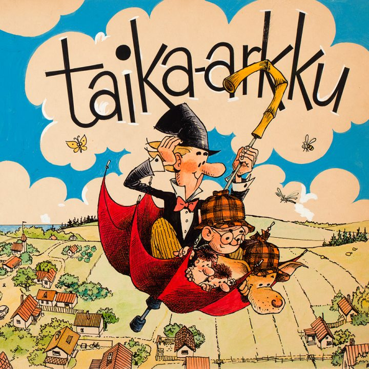
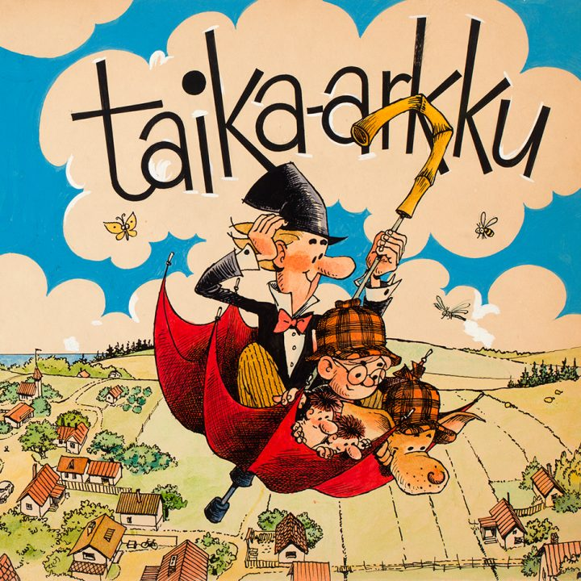

The world’s only Moomin Museum
in Tampere, Finland!
Info
Tue-Wed 9am-5pm, Thu-Fri 9am-7pm, Sat-Sun 10am-5pm, closed Mon / Adults 12€, children 6 € / Tampere Hall, Yliopistonkatu 55, Tampere, Finland


Exhibition

 


What Happens Next
Where did the ancestors of the Moomins live? What was Moominpappa’s stormy youth like? What do Hattifatteners do during a thunderstorm? These and many other secrets are revealed in What Happens Next?.
The Moomin Museum’s first permanent exhibition retells the entire story of the Moomins, starting from the Great Flood and the mad midsummer’s floating theatre to the puzzle of the lighthouse and the mysterious disappearance of the Moomins one grey November day.
Fairytale Cabin
Fairytale Cabin – The Illustrations of Usko Laukkanen 15.12.2018 – 31.3.2019 in the Observatory.
Free Guided Tour
The Moomin Museum offers free guided tours in English every Saturday and Sunday at 3 pm. We can take 20 persons on the tour, please come [...]
News
Winter light: graphic impressions until 23rd April 2019
Tove Jansson used the scratchboard technique to achieve evocative shadowy effects. Scratchboard is a form of direct engraving in which dark ink is scratched away to reveal a white image beneath. Come and create your own shadowy image of winter, or ink your plate with gold and bring out the sunshine!
Free Friday afternoons
Normally there is free admission on the last Friday afternoon of the month at 3-7pm. In January / February the free admission is on 1st Feb 2019 only.
All things are so very uncertain and that's exactly what's makes me reassured.
Too-ticky, Moominland Midwinter

Moomin Museum Midwinter
The Moomin Museum Midwinter event is here again to wake up Tampere’s Sorsapuisto Park from its slumber with bags of wintry fun and magical lights on Saturday, March 2, 2019, from 2 pm to 9 pm. Watch Moomin animations, test our ice slides, skate on the frozen pond, ride the merry-go-round, meet Moomintroll and enjoy the cosy warmth of our teepees. Join us for a magical day of fun winter activities and Moomin-style togetherness! Read more.
Tampere Hall Shop
The shop is open to museum guests and all visitors at Tampere Hall. The range includes exciting Moomin souvenirs, design and music, books written and illustrated by Tove Jansson, Tampere souvenirs, and classic Finnish design brands.
You will additionally find hand-made crafts by Finnish designers as well as music by the Tampere Philharmonic Orchestra, which is also based at Tampere Hall. Here you can buy Moomin postcards and stamps and have your letters stamped with a special Moomin postmark.

Well, it’ll be another nice long day tomorrow,’ said Moominmamma. ‘And it’s all yours from beginning to end. Now isn’t that a lovely thought!’
Moominmamma, from Moominpappa at Sea

Take a seat and enjoy a quiet moment with one of Jansson’s books in the Moomin Museum Reading Room. In our Reading Room you will find Moomin books in over 20 languages, along with other books by and about Jansson. The collection features historical rarities and fresh copies of every new Moomin edition.